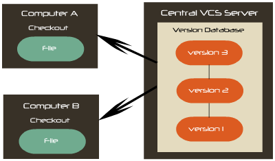

About
Version control, also known as revision control and source control (and an aspect of software configuration management), is the management of changes to documents, computer programs, large web sites, and other collections of information. Changes are usually identified by a number or letter code, termed the "revision number", "revision level", or simply "revision". For example, an initial set of files is "revision 1". When the first change is made, the resulting set is "revision 2", and so on. Each revision is associated with a timestamp and the person making the change. Revisions can be compared, restored, and with some types of files, merged.
Version control systems (VCS) most commonly run as stand-alone applications, but revision control is also embedded in various types of software such as word processors and spreadsheets, e.g., Google Docs and Sheets and in various content management systems, e.g., Wikipedia's Page history. Revision control allows for the ability to revert a document to a previous revision, which is critical for allowing editors to track each other's edits, correct mistakes, and defend against vandalism and spamming.
Overview
In computer software engineering, revision control is any kind of practice that tracks and provides control over changes to source code. Software developers sometimes use revision control software to maintain documentation and configuration files as well as source code.
As teams design, develop and deploy software, it is common for multiple versions of the same software to be deployed in different sites and for the software's developers to be working simultaneously on updates. Bugs or features of the software are often only present in certain versions (because of the fixing of some problems and the introduction of others as the program develops). Therefore, for the purposes of locating and fixing bugs, it is vitally important to be able to retrieve and run different versions of the software to determine in which version(s) the problem occurs. It may also be necessary to develop two versions of the software concurrently (for instance, where one version has bugs fixed, but no new features (branch), while the other version is where new features are worked on (trunk).
At the simplest level, developers could simply retain multiple copies of the different versions of the program, and label them appropriately. This simple approach has been used on many large software projects. While this method can work, it is inefficient as many near-identical copies of the program have to be maintained. This requires a lot of self-discipline on the part of developers, and often leads to mistakes. Consequently, systems to automate some or all of the revision control process have been developed.
Moreover, in software development, legal and business practice and other environments, it has become increasingly common for a single document or snippet of code to be edited by a team, the members of which may be geographically dispersed and may pursue different and even contrary interests. Sophisticated revision control that tracks and accounts for ownership of changes to documents and code may be extremely helpful or even indispensable in such situations.
Revision control may also track changes to configuration files, such as those typically stored in /etc or /usr/local/etc on Unix systems. This gives system administrators another way to easily track changes made and a way to roll back to earlier versions should the need arise.
Key Concepts
Traditional revision control systems use a centralized model where all the revision control functions take place on a shared server. If two developers try to change the same file at the same time, without some method of managing access the developers may end up overwriting each other's work. Centralized revision control systems solve this problem in one of two different "source management models": file locking and version merging.
Atomic operations
Computer scientists speak of atomic operations if the system is left in a consistent state even if the operation is interrupted. The commit operation is usually the most critical in this sense. Commits are operations that tell the revision control system you want to make a group of changes final and available to all users. Not all revision control systems have atomic commits; notably, the widely used CVS lacks this feature.
File locking
The simplest method of preventing "concurrent access" problems involves locking files so that only one developer at a time has write access to the central "repository" copies of those files. Once one developer "checks out" a file, others can read that file, but no one else may change that file until that developer "checks in" the updated version (or cancels the checkout).
File locking has both merits and drawbacks. It can provide some protection against difficult merge conflicts when a user is making radical changes to many sections of a large file (or group of files). However, if the files are left exclusively locked for too long, other developers may be tempted to bypass the revision control software and change the files locally, leading to more serious problems.
Version merging
Most version control systems allow multiple developers to edit the same file at the same time. The first developer to "check in" changes to the central repository always succeeds. The system may provide facilities to merge further changes into the central repository, and preserve the changes from the first developer when other developers check in.
Merging two files can be a very delicate operation, and usually possible only if the data structure is simple, as in text files. The result of a merge of two image files might not result in an image file at all. The second developer checking in code will need to take care with the merge, to make sure that the changes are compatible and that the merge operation does not introduce its own logic errors within the files. These problems limit the availability of automatic or semi-automatic merge operations mainly to simple text based documents, unless a specific merge plugin is available for the file types.
The concept of a reserved edit can provide an optional means to explicitly lock a file for exclusive write access, even when a merging capability exists.
Baselines, labels, and tags
Most revision control tools will use only one of these similar terms (baseline, label, tag) to refer to the action of identifying a snapshot ("label the project") or the record of the snapshot ("try it with baseline X"). Typically only one of the terms baseline, label, or tag is used in documentation or discussion[citation needed]; they can be considered synonyms.
In most projects some snapshots are more significant than others, such as those used to indicate published releases, branches, or milestones.
When both the term baseline and either of label or tag are used together in the same context, label and tag usually refer to the mechanism within the tool of identifying or making the record of the snapshot, and baseline indicates the increased significance of any given label or tag.
Most formal discussion of configuration management uses the term baseline.